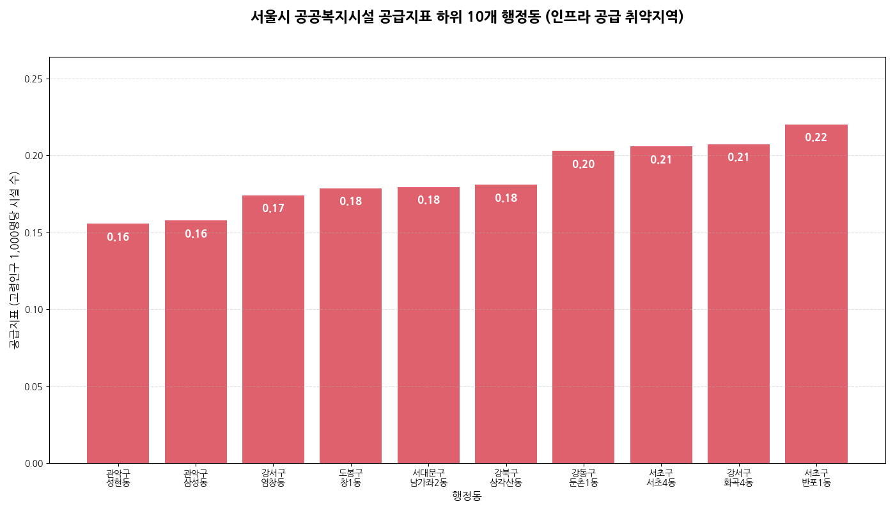
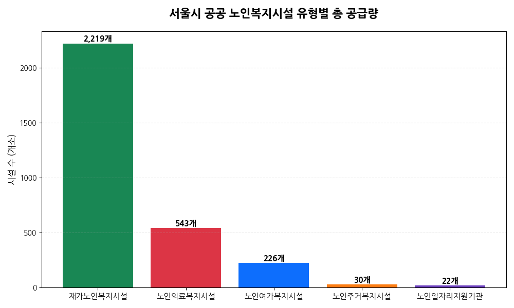
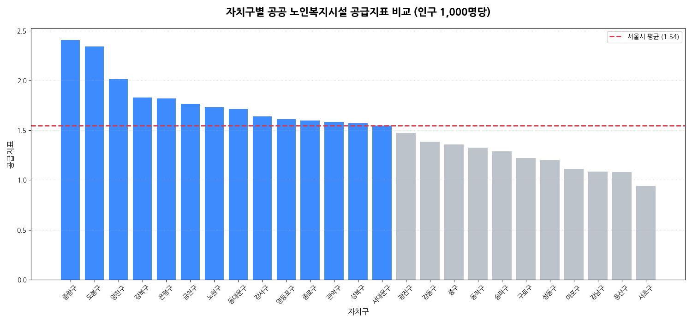
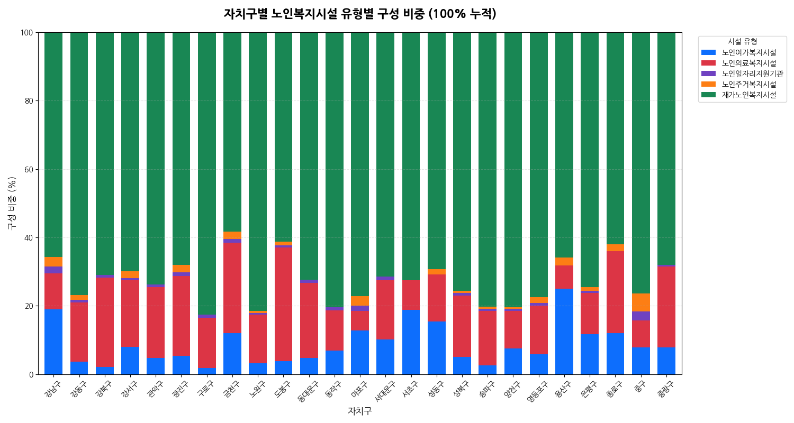
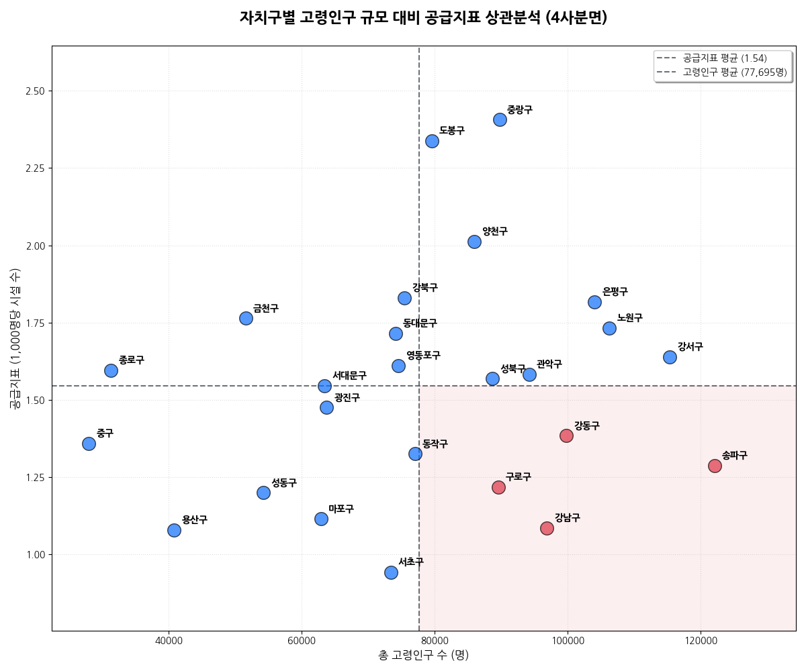
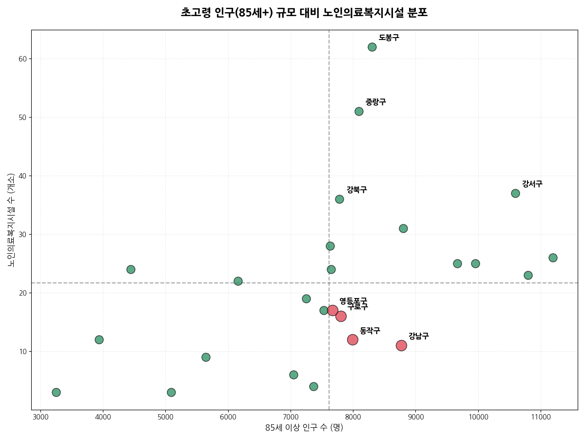

공공 데이터 기반의 공공 노인복지시설 공급지표(Supply Index) 산출과 통계적 취약지역 탐색
서울시 총고령인구1,942,365명
총 노인복지시설3,040개소
상대적 공급 취약 지역41개 행정동
공적 인프라 미배치 지역24개 행정동
1. 분석 개요
1.1. 분석 배경 및 목적
대한민국은 세계에서 가장 빠른 속도로 초고령사회에 진입하고 있으며, 서울시 또한 지역별 인구 구조 변화에 따라 노인 복지 수요가 빠르게 증가하고 있다. 특히 고령 인구의 지역별 편차가
확대되면서, 공공 노인복지시설의 공급 수준과 접근성에 대한 점검 필요성이 커지고 있다.
본 분석은 「노인복지법」에 근거하여 보건복지부와 서울특별시가 관리하는 공식 노인복지시설 데이터를 활용하여, 서울시 25개 자치구 및 행정동 단위의 공적 노인복지 인프라 분포 현황을
분석하고자 한다. 또한 고령 인구 규모와 시설 공급 수준을 비교함으로써, 지역 간 공공 복지 인프라의 상대적 공급 취약성과 공간적 불균형 특성을 진단하는 데 목적이 있다.
1.2. 데이터의 범위와 분석 관점
본 보고서는 국가 및 지방자치단체의 관리 체계에 포함되는 공적 노인복지 인프라 분석을 위해 서울시 열린데이터 광장에서 제공하는 다음의 공공 데이터를 활용하였다.
구분
데이터명
인구 데이터
등록인구(연령별_동별)_20260507102344
시설 데이터
서울시 노인주거복지시설 목록
서울시 노인의료복지시설 목록
서울시 노인여가복지시설 목록
서울시 재가노인복지시설 목록
서울시 노인일자리지원기관 목록
반면, 「노인장기요양보험법」에 따른 민간 장기요양기관, 방문요양센터, 요양병원 및 기타 민간 돌봄 서비스 기관은 본 분석 범위에 포함하지 않았다. 따라서 본 보고서의 분석 결과는 특정
지역의 실제 복지 수준 전체를 의미하기보다는, 공공데이터 기준의 공적 노인복지 인프라 공급 수준과 정책적 배분 현황을 진단하기 위한 탐색적 분석이라는 점에 그 의의가 있다.
2. 주요 분석 결과
※ 본 분석은 공공 데이터에 등록된 법적 시설만을 대상으로 함
2.1. 요약 통계
서울시 총 고령인구: 1,942,365명
서울시 총 노인복지시설: 3,040개소
평균 공공 노인복지시설 공급지표(Supply Index): 1.57 (고령인구 1,000명당 약 1.57개 시설)
공적 인프라 미배치 지역 (시설수 0개): 24개 행정동
2.2. 공적 인프라 미배치 지역 현황 (시설수 0개)
서울시 내 노인복지시설이 단 한 곳도 존재하지 않는 행정동은 총 24개입니다.
순위
자치구
행정동
총고령인구수
85세이상
비고
1
송파구
잠실3동
6,827
478
최다 인구 미배치 지역
2
서초구
잠원동
5,201
515
초고령 인구 밀집
3
송파구
잠실4동
4,910
383
-
4
강남구
청담동
4,850
440
-
5
강남구
개포1동
4,569
290
-
6
송파구
가락1동
4,546
220
-
7
송파구
잠실2동
4,340
345
-
8
강남구
일원본동
3,969
294
-
9
서초구
반포3동
3,652
382
-
10
송파구
송파2동
3,549
254
-
※ 본 표의 ‘미배치 지역’은 서울시 공공데이터 기준의 공적 노인복지 인프라 현황이며, 실제 민간 돌봄서비스 운영 현황과는 차이가 있을 수 있음.
2.3. 공공 노인복지시설 공급지표(Supply Index) 하위 10개 행정동
시설은 존재하나 인구 대비 공급 수준이 가장 낮은 지역입니다.

[데이터 해석 유의사항]
본 분석은 서울시 공공데이터에 등록된 노인복지시설 현황을 기준으로 수행되었다. 일부 행정동에서는 장기요양기관·재가돌봄서비스 등 실제 운영 중인 민간 돌봄 자원이 데이터에 포함되지 않았을
가능성이 있다. 따라서 본 보고서의 ‘미배치 지역’은 실제 돌봄 서비스의 완전한 부재라기보다, 공공데이터 기준 공적 복지 인프라 공급 수준의 한계를 의미하는 것으로 해석할 필요가 있다.
3. 자치구별 공급 현황 분석
3.1. 시설 유형별 전체 분포
서울시 전체 공공 노인복지시설의 유형별 분포를 분석한 결과입니다.

※ 해당 이미지 파일이 같은 폴더에 없어 표시되지 않습니다. (.png 파일을 함께 배치해주세요)※ 각 영역의 넓이는 해당 시설 유형이 전체 공급량에서 차지하는 비중을 나타냄.
핵심 해석
서울시 공공 노인복지 인프라는 재가노인복지시설과 노인여가복지시설이 전체의 약 80% 이상을 차지하며 높은 비중을 차지하고 있습니다. 반면, 고령자의 경제적 자립을 돕는 일자리지원기관이나
안정적 주거를 지원하는 주거복지시설은 절대적인 수량이 부족하여, 향후 노인 빈곤 및 주거 문제 대응을 위한 유형 다변화가 필요합니다.
3.2. 자치구별 공공 노인복지시설 공급수준 비교
고령인구 1,000명당 시설 수를 나타내는 '공급지표(Supply Index)'를 기준으로 자치구별 격차를 분석했습니다.

※ 해당 이미지 파일이 같은 폴더에 없어 표시되지 않습니다. (.png 파일을 함께 배치해주세요)※ 막대 길이가 길수록 해당 자치구의 고령인구 대비 공공 인프라 공급 수준이 높음을 의미함.
핵심 해석
서울시 평균 공급지표(Supply Index)는 약 1.57 수준이나, 자치구별로 상당한 편차가 관찰됩니다. 중랑구, 도봉구, 종로구 등은 평균을 크게 상회하며 양호한 공급 수준을
보이지만, 송파구, 강남구, 서초구 등 동남권 지역은 인구 밀집도 대비 시설 확충이 더디게 이루어져 평균 이하의 지표를 기록하고 있습니다.
3.3. 자치구별 시설 유형 비중 비교
각 자치구가 보유한 복지 자원의 구성적 특징을 100% 누적 막대그래프로 비교했습니다.

※ 해당 이미지 파일이 같은 폴더에 없어 표시되지 않습니다. (.png 파일을 함께 배치해주세요)※ 각 막대의 색상별 비중은 해당 자치구 내 시설 유형별 상대적 구성을 나타냄.
핵심 해석
모든 자치구에서 재가복지 비중이 높게 나타나지만, 특정 자치구는 의료복지시설이나 여가시설의 비중이 상대적으로 높게 형성되어 지역별 정책 기조의 차이를 보입니다. 특히 인구 밀도가 높은
지역일수록 재가복지 의존도가 심화되는 경향이 있어, 지역 특성에 맞는 균형 잡힌 인프라 믹스(Mix) 전략이 요구됩니다.
3.4. 인구수 대비 공급지표(Supply Index) 상관분석 (4사분면)
자치구별 고령인구 규모와 실제 공급 수준 간의 상관관계를 통해 정책적 우선순위를 도출했습니다.

※ 해당 이미지 파일이 같은 폴더에 없어 표시되지 않습니다. (.png 파일을 함께 배치해주세요)※ X축(오른쪽)으로 갈수록 고령인구가 많고, Y축(아래쪽)으로 갈수록 시설 공급 수준이 낮음을 의미함.
핵심 해석
4사분면(오른쪽 아래 영역)은 고령인구는 평균보다 많지만 공급지표(Supply Index)는 평균에 못 미치는 지역으로 분류됩니다. 특히 송파구, 강서구, 강남구는 고령인구 규모가 서울시
상위권임에도 불구하고 공급지표(Supply Index)는 상대적으로 낮게 나타나, 향후 공공 노인복지 인프라 확충 시 우선 검토가 필요한 지역으로 해석될 수 있습니다. 해당 지역들은 인구
규모 대비 인프라 공급 부담이 높을 것으로 예상되므로, 행정동 단위의 세밀한 접근성 분석이 병행될 필요가 있습니다.
3.5. 초고령 인구 대비 의료시설 분포 분석
85세 이상 초고령 인구의 의료 서비스 접근성을 진단하기 위해 의료복지시설 공급 현황을 분석했습니다.

※ 해당 이미지 파일이 같은 폴더에 없어 표시되지 않습니다. (.png 파일을 함께 배치해주세요)※ 점의 위치가 오른쪽 하단으로 치우칠수록 초고령 인구 대비 의료복지시설 공급이 상대적으로 낮음을 의미함.
핵심 해석
초고령 인구 규모가 클수록 의료 및 요양 서비스에 대한 수요가 기하급수적으로 증가합니다. 그러나 일부 자치구는 초고령 인구 규모 대비 의료복지시설 공급 수준이 상대적으로 낮게 나타나,
향후 수요 증가에 대비한 추가 검토가 시급합니다. 특히 송파구와 강남구 등은 초고령 인구가 가장 밀집되어 있음에도 시설 공급이 하위권에 머물러 있어 정밀한 현황 파악이 필요합니다.
4. 공간 분석 (지도 시각화)
4.1. 공공복지시설 공급지표(Supply Index) Choropleth Map
서울시 행정동 경계를 기준으로 공공복지시설 공급지표(Supply Index)를 시각화한 지도입니다. 붉은색이 짙을수록 고령인구 대비 공공 노인복지시설 공급지표(Supply Index)가
낮은 지역을 의미하며, 검은색은 시설이 전무한 공적 인프라 미배치 지역을 의미합니다.
📍 공급지표 Choropleth Map (인터랙티브 지도) ※ 인쇄/PDF 환경에서는 인터랙티브 지도가 표시되지 않습니다.
온라인 대시보드에서 shortage_map.html을 직접 확인하시기 바랍니다.
※ 붉은색이 짙을수록 인구 대비 시설 공급 수준이 낮으며, 검은색은 시설 미배치 지역을 의미함.
5. 정책적 시사점 및 제언
본 분석은 서울시 공공데이터를 기반으로 공적 노인복지 인프라의 배분 현황을 진단하였으며, 이를 통해 도출된 정책적 시사점은 다음과 같다.
5.1. 지역별 공공 노인복지시설 공급지표(Supply Index) 분석 결과
동남권(강남·서초·송파): 해당 지역들은 고령 인구 규모 대비 공공 노인복지시설 공급지표(Supply Index)가 타 지역에 비해 상대적으로 낮게
나타났다. 이는 민간 돌봄 서비스 인프라의 활용 가능성과는 별개로, 공적 인프라의 균형적 배분 관점에서 향후 시설 확충이나 서비스 연계에 대한 추가 검토가 필요함을 시사한다.
외곽 지역 및 일부 행정동: 공공데이터 기준 시설 미배치 지역이 일부 관찰되며, 이는 지리적 위치나 인구 밀집도에 따른 공적 서비스 접근성의 차이를
야기할 가능성이 존재한다.
5.2. 정책 제언 및 대응 방향
공공데이터 기준 시설 미배치 지역 점검 및 보완: 송파구 잠실3동, 서초구 잠원동 등 공공데이터 기준 시설 미배치 지역에 대해서는 실제 운영 중인
민간 돌봄 자원 현황과 생활권 접근성을 함께 검토해야 한다. 이를 통해 공공 인프라의 추가 보완 필요성을 정밀하게 판단하고, 필요시 소규모 거점 센터나 복합 복지 공간의 조성을
검토할 수 있다.
공급 부담 가능성 지역의 서비스 체계 다변화: 공급지표(Supply Index)가 상대적으로 낮아 향후 서비스 수요 부담이 높아질 가능성이 존재하는
지역은 물리적 확충 외에도 서비스 방식의 다변화가 필요하다. '찾아가는 복지 서비스'를 강화하거나, IoT 기반의 실시간 안전관리 시스템 등 '디지털 돌봄' 기술을 적극 도입하여
인프라 공급의 제약을 보완하는 방안이 요구된다.
시설 유형의 균형적 배분 전략 수립: 현재 서울시 공적 인프라원은 여가 및 재가복지 중심의 공급 비중이 높게 나타나고 있다. 향후에는 고령자의 경제적
자립을 지원하는 노인일자리지원기관과 안정적 거주 환경을 제공하는 주거복지시설의 자치구별 균형 배치를 통해 지역별 복지
인프라 믹스(Mix)를 고도화해야 한다.
데이터 기반의 상시 모니터링 체계 구축: 행정동별 고령 인구 구조 변화와 시설 공급 현황을 정기적으로 매칭하여, 공급 부담 가능성이 높은 지역을
조기에 파악하는 상시 모니터링 체계가 필요하다. 이를 통해 수요 변화에 선제적으로 대응하는 데이터 기반의 정밀한 복지 행정을 구현해야 한다.
6. 데이터 정의 및 분석의 한계
본 보고서는 서울시 열린데이터 광장에서 제공하는 공공데이터를 기반으로 공적 노인복지 인프라 현황을 정량적으로 진단하였다. 분석 결과의 정확한 해석을 위해 다음과 같은 데이터 정의와 한계점을
명시한다.
6.1. 분석의 전제 및 한계점
데이터의 범위: 본 분석은 「노인복지법」에 근거하여 관리되는 공식 노인복지시설 데이터만을 포함한다. 따라서 민간 장기요양기관, 방문요양센터, 요양병원
등 다양한 민간 돌봄 자원은 분석 범위에 포함되지 않았으므로, 특정 지역의 전체적인 복지 수준을 평가하는 데는 한계가 존재한다.
공공데이터의 기준점 한계: 본 보고서는 보건복지부 및 서울특별시의 공공데이터 포털에 등록된 공식 시설 현황을 기준으로 한다. 따라서 데이터 갱신
시점에 따라 실제 현장 상황과 일부 차이가 발생할 수 있다.
지역적 특수성 반영의 한계: 일부 행정동은 재건축·재개발·이주 등의 영향으로 고령인구 규모가 일시적으로 감소하거나 급격히 변동된 상태일 수 있으며,
이 경우 시설 공급지표(Supply Index)가 일시적으로 과대 또는 과소 해석될 가능성이 있다.
시설 규모 및 질적 지표 미반영: 본 분석은 시설의 '개소 수'를 중심으로 수행되었으며, 시설별 수용 정원(규모), 서비스 프로그램의 질, 이용률 등
운영 측면의 실질적 지표는 포함하지 않았다.
용어의 정의: '시설 수 0개'인 지역은 공적 인프라 미배치 지역으로 정의하며, 이는 공공 인프라의 정책적 배분 현황을
탐색하기 위한 지표로 활용되었다.
행정동 명칭 매칭: 데이터 병합 과정에서는 행정동 명칭 표기의 차이(예: 마침표, 숫자 표기 방식 등)를 정제하여 최대한 일관성 있게 통합하였으나,
일부 공공데이터 간 표기 기준 차이로 인해 미세한 매칭 오차 가능성이 존재한다.
인구 특이치(Outlier): 재개발·재건축 지역처럼 고령인구 규모가 일시적으로 매우 낮게 집계되는 경우, 해당 지역의 공급지표(Supply
Index)가 실제 수요 대비 왜곡되어 보일 가능성이 있다.
6.2. 공공 노인복지시설 공급지표(Supply Index) 산출 기준
공급지표(Supply Index)는 고령인구 1,000명당 배치된 공적 복지시설의 수로 정의되며, 다음과 같은 산출식을 따랐다.
Supply Index = (총 시설 수 / 총 고령인구수) * 1,000
(※ 공공데이터 기준 공적 인프라 미배치 지역은 별도 분류 및 검토)
6.3. 향후 과제
민간 돌봄 자원 포함 통합 데이터 구축: 장기요양기관, 민간 재가서비스 등을 포함한 온-오프라인 통합 복지 데이터셋 구축
질적 분석 도입: 시설 규모(정원), 운영 형태, 서비스 프로그램 등을 반영한 질적 분석
실제 이용 가능 인원 기반 가용성 분석: 시설별 정원 대비 현원 정보를 활용한 실질적 가용성 진단
공간 접근성 분석 고도화: 보행 환경 및 대중교통 연계성을 고려한 공간 분석 기술 적용
본 보고서는 서울시 공공데이터를 기반으로 공적 복지 인프라의 현주소를 진단한 정량적 탐색 분석입니다. 향후 본 분석을 토대로 민간 돌봄 자원과 지리적
접근성까지 포괄하는 통합적 연구로 확장함으로써, 서울시 노인 복지 사각지대 해소를 위한 보다 정교한 정책 수립의 근거를 마련해야 합니다.